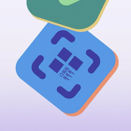
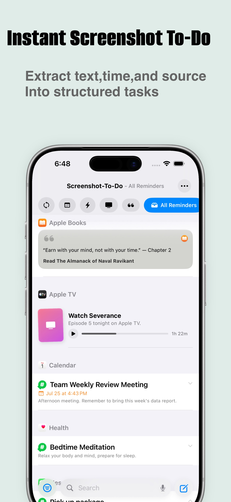
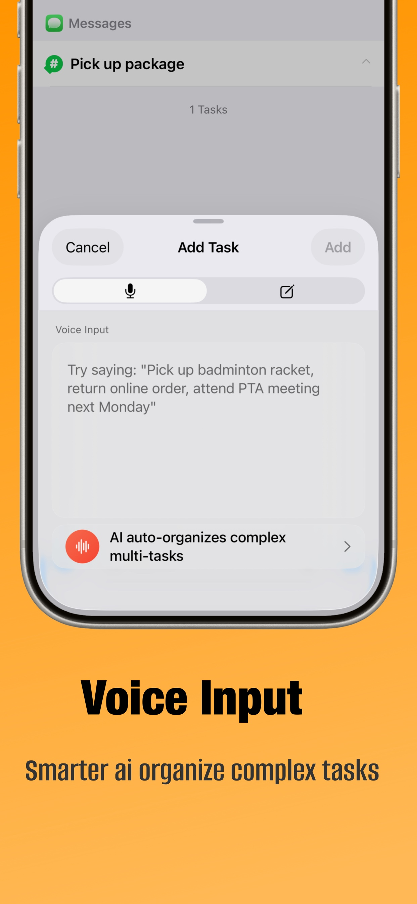
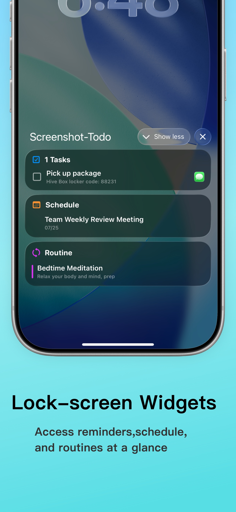
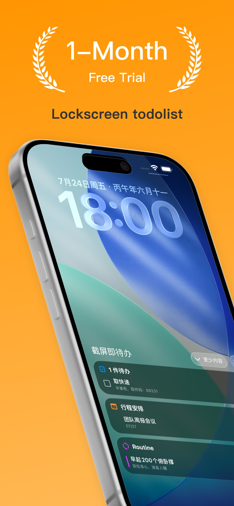

截屏即灵感，
随手变成待办
Capture screenshots.
Turn ideas into action.
一款为去待办与灵感收藏而生的极简纯本地工具 A minimalist on-device vault for screenshots, voice notes & smart tasks




截屏即刻识别，结构化归纳 Instant Screenshot To-Do
调用 Apple 原生 Vision 框架在本地提取截图文字、时间与来源应用，自动整理成日程、书影音、好物或行动待办，告别杂乱相册。 Extracts text, dates, and source apps locally via Apple Vision OCR—turning screenshots into structured tasks and 12 curated inspiration vaults.
语音速记，AI 智能拆解 Voice Input & AI Sorting
长按即说，iOS 原生语音实时本地转写，一口气记下的多件事也能被 AI 自动拆解并归类到对应标签下。 Dictate fleeting thoughts on-device with native Speech recognition and let AI automatically break down and organize multi-part tasks.
锁屏组件与实时看板 Lock-Screen Widgets
丰富的锁屏小组件与实时活动卡片，取件码、日程提醒与日常习惯抬眼即见，顺手完成而不被死线焦虑绑架。 Access reminders, schedules, and daily routines directly from your iOS Lock Screen and Live Activities at a glance.
100% 本地沙盒，零追踪 100% On-Device Privacy
免注册登录，无任何广告或行为追踪 SDK。所有截图原图与灵感卡片均保存在设备本地沙盒，绝不用作模型训练。 Zero accounts, zero trackers, and zero ad SDKs. Screenshots and cards stay strictly inside your device sandbox and are never used for AI training.